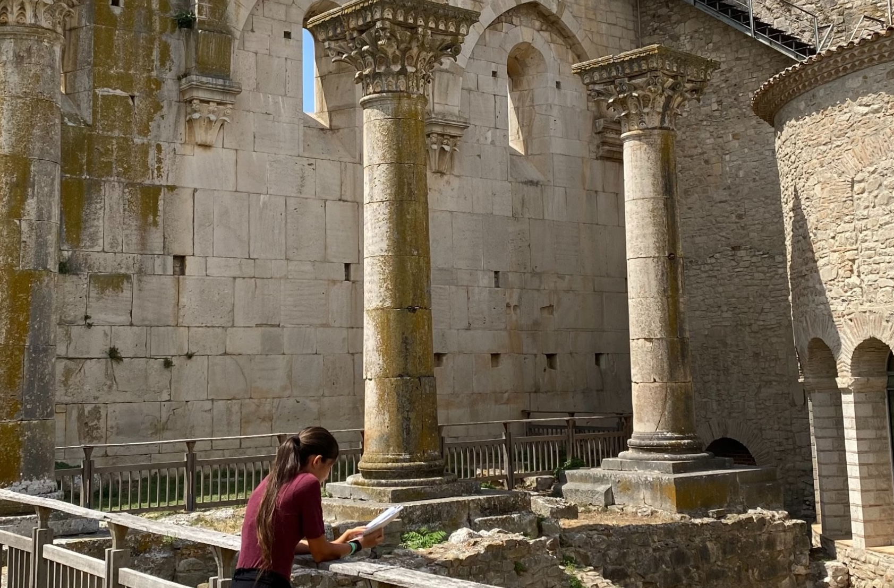
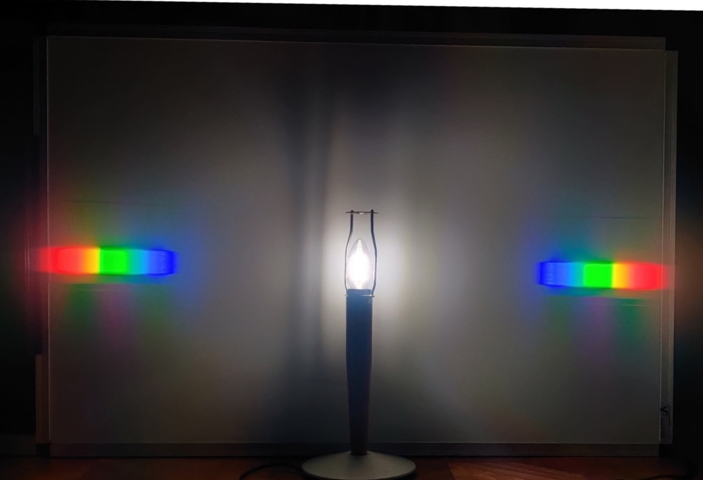

About the blog
"Perchè?" E' da sempre la mia domanda preferita, nonostante non si possa più attribuire la colpa all'età infantile. La curiosità è il motore di ricerca più antico e più efficace: è sufficiente guardarsi attorno per aprire le porte di nuovi mondi. Oltrelasiepe è un modo per condividere parte di ciò che esploro, ciò che mi sembra interessante, ciò che mi piace
About Oltrelasiepe
Per Leopardi, la siepe è un ostacolo che impedisce di vedere nella sua interezza il panorama. Dà fastidio perchè non permette di scorgere l'orizzonte. Eppure allo stesso tempo scatena la fantasia, libera l'immaginazione. Forse per il poeta la siepe era davvero un cespuglio sul colle di Recanati. Oggi ognuno ha la sua siepe e nella maggior parte dei casi non è un groviglio arboreo. L'importante è saper convivere con la propria siepe: ripararsi dietro essa, potarne i rami e soprattutto, guardare oltre. Magari c'è il buio, magari no. Val la pena andare a vedere.


About me
Giù di qua, fermati lì, eccoci qua. Di nome e di fatto, sono sempre attiva, tra passeggiate in montagna, nuotate in piscina e città da visitare. Viaggiare è il modo migliore per conoscere e conoscere è importante per capire chi siamo. Quando invece sono a casa, molto probabilmente ho un libro in mano...
About my studies
Nel tentativo di trovare una risposta ai miei tanti "come mai", studio Fisica all'Università degli Studi di Milano. Cercare di capire in che modo funziona il mondo in cui viviamo è una sfida. Appassionante. Sorprendente. Stimolante.
